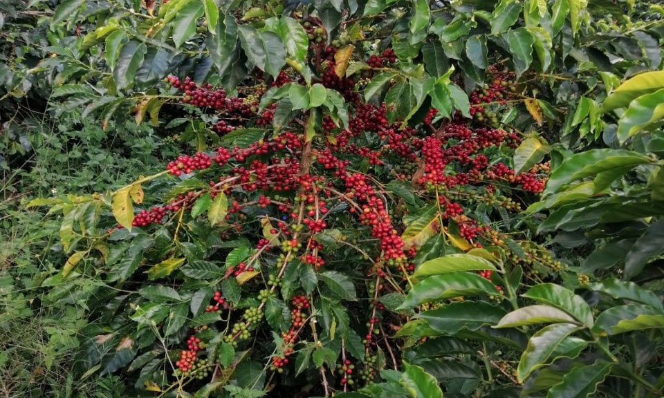
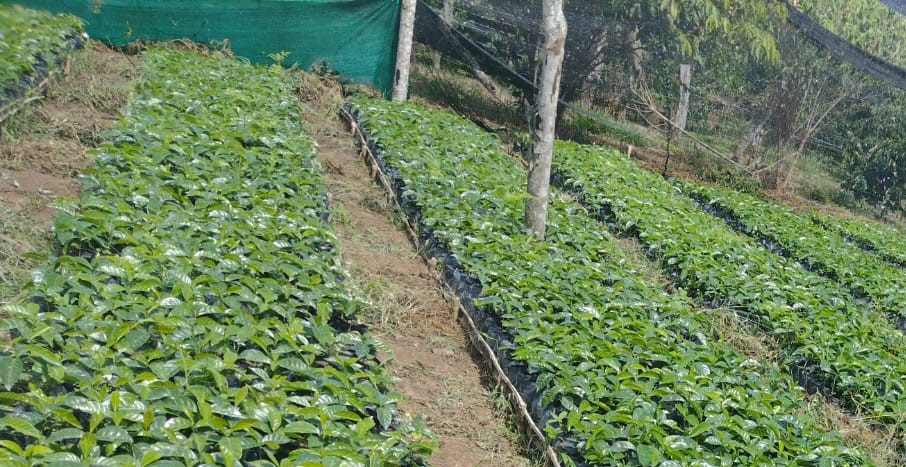
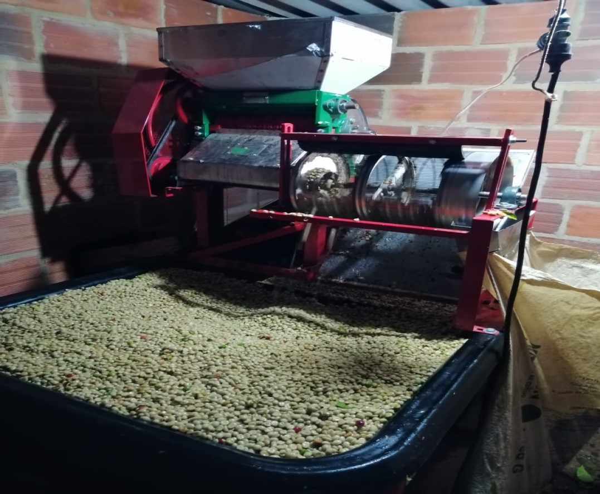

95 años de historia, desarrollo y liderazgo cafetero
Fue el 10 de diciembre de 1928 el día que cafeteros santandereanos visionarios y perseverantes decidieron emprender el camino de la transformación productiva y comercial de su caficultura. El Comité de Cafeteros de Santander, cumple 95 años de existencia, de desarrollo y bienestar, que junto a los demás sectores productivos y al empuje de su gente han hecho de esta región una de las más prósperas del país.
La caficultura Santandereana
La actividad cafetera en Santander es adelantada por 33.600 familias cafeteras en 38.351 fincas y genera el equivalente a 42.000 empleos directos en las zonas rurales, aportando como ningún otro subsector razones de permanencia, arraigo y fortalecimiento del tejido social en más de 1.012 veredas del departamento. Las 55.300 hectáreas sembradas en café, representan el 23% de la producción agrícola departamental, convirtiéndola en una de las actividades que más superficie utiliza, mayor mano de obra genera, y el producto con mayor exportación del sector agropecuario en el departamento y el segundo después de petróleo y combustibles.
Calidad del Café de Santander
En el año 2014 Santander recibió la primera Denominación de Origen Protegida, y esta fue para el Café de Santander, otorgada por La Superintendencia de Industria y Comercio. Este es un justo reconocimiento al crecimiento que el sector cafetero ha tenido en esta región el cual se convierte en un instrumento diferenciador, de propiedad colectiva de los cafeteros Santandereanos, que vincula el Origen del Café de Santander con sus atributos de calidad, expresadas en características únicas y representativas de la región como son el componente humano, cultural y de tradición, y como resultado de las buenas prácticas de cuidado del cultivo bajo sombra, recolección y beneficio. Santander es reconocido por sus cafés especiales, siendo un departamento en donde más programas de certificación y verificación existen, logrando así que 27.952 hectáreas en 15.129 fincas y 11.928 cafeteros tengan hoy esta condición que les permite abrir puertas a mercados y por tanto a mejores precios.
- Café de Altura: De sabor ácido y notas afrutadas.
- Café Suave: Balanceado y aromático.
- Café Orgánico: Cultivado sin productos químicos.